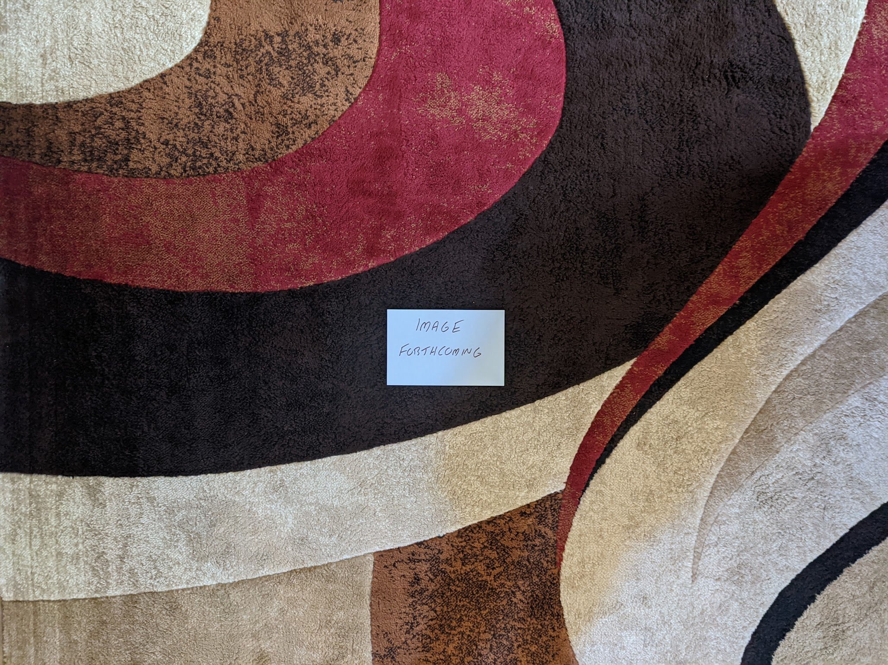

1987 Albums¶
This was the year that my family got cable TV and I had access to MTV for the first time. This was still very much the era where they were playing 95% music videos and for the first time there was a music discovery path outside of my older siblings’ music collections. The music of this era makes me think of the much simpler times of childhood
Compiling this list of favorites has made me realize that my taste in 80s music is more diverse and scattered than any other decade. In later years, I would mostly be interested in alternative/indie, and in the early decades I lean heavily into classic rock. Throughout the 80s, my favorites come from a wide swath of the pop music spectrum and the list below really makes this very clear. In general, the mid-80s were a time when a lot of different things were getting played on the radio, or perhaps even more importantly, MTV. In a way, this also might be the year that my tastes align most closely with the most popular music of the day. Perhaps these two things are directly related.


Kiss Me, Kiss Me, Kiss Me by The Cure - This might be a little too long, and there probably is a really strong single album here. That said, the band seems to be working things out here, to transition from the sparer gothic sounds of their early records, and the (somewhat) brighter, pop songs to follow. Perhaps the double album was required for them to fully explore the contrasting approaches that would define both eras. Mostly remembered for the massive hit and classic song “Just Like Heaven”, I now enjoy it mostly for the trademark, extended Cure atmospherics that stitch together the short form pop songs. [Memory: I really connected with this one after I picked up a Record Store Day reissue of it in 2013.]
Within the Realm of a Dying Sun by Dead Can Dance [1987 FAVORITE] - This is the most goth record ever made. A stunningly beautiful collection of orchestral atmospherics, it is fairly unique in the history of music. Without question their finest moment as a duo, it also captures the best moments from each of the two vocalists. Album closer “Persephone (The Gathering of Flowers)” is the best summary of what made these guys great, and the absolute peak of their incredibly strong series of albums
Music for the Masses by Depeche Mode - Perhaps the album that best captures their trademark sound, even if their later more diverse works were a bit better overall. This is the best presentation of the hard edged, industrial tinged synth-pop that dominated their early work, and would alway be under the surface as they continued to mature as a band. Opener “Never Let me Down” is a massive compositional success, and the blueprint for the music that would take them to new heights on the next record. Every DM album is required to have a beautiful little Martin Gore sung ballad, and we have it here in “I Want You Now”. [Memory: This was the last of their classic albums I acquired on CD, and the last one I repurchased on vinyl. I don’t know why, as I really like it.]
Echo & The Bunnymen by Echo & The Bunnymen - The last of five great records to kick things off, and they would never make anything this good again. Mostly famous for the hit “Lips Like Sugar”, but there are some other great tracks here, especially “Bring on the Dancing Horses”. Perhaps they were becoming a little too refined, and loosing touch with the edge that made them great, but there is the first small indications of filler here. [Memory: This is one of those records I bought early in my vinyl collecting days, without having heard it before. It became a favorite probably because of the engagement the format created.]
The Innocents by Erasure - A joyous and fun bit of synth-pop. The more jaunty aspects of Depeche Mode definitely went along with Vince Clarke. This will always be mostly famous for the first track an lead single, “A Little Respect”, but the whole thing is strong from beginning to end. “Ship of Fools” could have been a track off of the first two DM albums, and “Chains of Love” is an amazing throwback to to kind of soulful electronic pop that was en vogue in the first half of the decade. [Memory: I remember my sister listening to this all the time in the late 80s. It was one of the first CDs that made it into our house soon after the format took hold.]
Cloud Nine by George Harrison - It had been a really long time since he had released a great album, and thanks to the input of Jeff Lynne this is a real winner. This will always be mostly remembered for the massive hit cover of “Got My Mind Set On You” and to a lesser extent the Beatles nostalgia piece “When We Was Fab”, but the whole thing is solid. We get some inspired George Harrison style guitar solos on the title track and “This is Love”. The influence of Lynne is unmistakable and wonderful. He is an overbearing, but highly effective influence in the studio. [Memory: My sister bought a vinyl copy of this, but I don’t really remember listening to it much at the time. I remember buying a copy of it early in my CD collecting days, and remember thinking it sounded vaguely like my favorite Tom Petty record, Full Moon Fever. That is the Jeff Lynne effect.]
Whitney by Whitney Houston - One of the greatest albums in mainstream pop history, it is solid from beginning to end. “I Wanna Dance with Somebody” is an all time classic of dance-pop, and a stellar production. The ballads are the most remarkable specimens of adult contemporary radio, especially “Didn’t We Almost Have it All”. My favorite track will always be the New Jack preview of “So Emotional” a track that still feels fresh and exciting nearly 40 years later. [Memory: I remember the video for “I Wanna Dance with Somebody” still playing repeatedly on MTV when we would get cable a year after its release. At the time I remember thinking the song was really old. Time works different when you are a kid.]
Kick by INXS - Probably the definitive record of 1987. These guys did an amazing job of aggregating the best moments of mid-80s alternative rock and refining it into something that was ready made for the Billboard charts. This is the kind of highly refined, synthesized rock music that has been coming out of Australia since the beginning of rock. That isn’t to say it is derivative, so much as to say it is a reflection of the best aspects of cotemporary trends from the other side of the world. Very much a product of its time, but it holds up great all these years later. [Memory: I think this might be the first time that I had a profound connection with the contemporary rock music of the day. I remember the video for “Need You Tonight” playing incessantly on MTV in early 1988, and I dug it. I especially remember connecting immediately with the slower, more soulful “Never Tear Us Apart” though its distinctive video. I tried to get my siblings to buy a CD copy of “The album with the skateboard on the cover”. I remember some confusion with another record from a hair metal band of the day (possibly Kix, but I have never found the album if so). Eventually, my sister did buy a copy, and it became one of my childhood favorites. Their funky, soulful brand of new wave had a big influence on the music I would listen to later in life.]
Bad by Michael Jackson - The cross-over is complete with this massive hit record. While Thriller still had the trappings of the Motown scene that produced him, this is very much a mainstream pop radio album, and it is a darn fine one. This is also the record where the idiosyncrasies both musical and aesthetic start to dominate the proceedings. The man would soon be consumed by the excesses of his own mythology, but he would create one last masterpiece before fading slowly into oblivion. [Memory: This was the first Michael Jackson album cycle that I can clearly remember as a kid. The singles off of this were everywhere. The video for “Smooth Criminal” was on MTV non-stop in late 1988.]
Running in the Family by Level 42 - For me, this will always be the ultimate album on the synth heavy side of sophista-pop. It is the kind of smooth, jazzy, ultra-produced music that is so cheesy and dated that it somehow becomes timeless. It is always a little shocking that David Foster was not involved in this, especially the title track which seems to carry his fingerprint strongly. “It’s Over” feels like a fully transparent effort to recreate the torch song magic of “Leaving Me Now”, but from the other side of the story, and it works out perfectly. [Memory: My brother bought a compilation CD of these guys in the early 90s. I made fun of it mercilessly for being cheesy. I still think it is cheesy, but I now understand it is also beautiful and incredibly well done.]
Let it Loose by Miami Sound Machine - The last album before Gloria Estefan would emerge as a solo artist separate from her band is a preview of that career to come, with a distillation of what made the group work well. This is slickly produced, Cuban influenced, dance-pop. The monster hit “Rhythm Is Gonna Get You” feels like a incremental improvement on the hit “Conga” from the last record. Many of the tracks turn down the tempo on ballads that point forward to the solo career to come, most successfully on the soft rock radio smash “Can’t Stay Away From You”. [Memory: There are two records that I strongly associate with the CD format: The Cocktail soundtrack and this release. They were two of the very first discs my brother bought and listed to on his new HiFi in 1988. The super-scrip, somewhat artificial production of this album is the perfect showcase for the lack of surface noise and digital sound reproduction that that format offered. I remember messing with the Dolby Surround Sound controls to create all sorts of weird echos and effects when listening to “Rhythm is Gonna Get You”. My brother had bought a vinyl copy at release, and is a testament to how much he like these guys that he repurchased it on CD about a year later.]
Faith by George Michael - We saw flashes of brilliance in the last years of Wham, but the full pop genius is on full display here. At the time it was easy to write him off as a manufactured pop idol, but in retrospect it is hard to see him as anything other than an underappreciated musical genius. The soulful pop songwriting mastery is most clear in the subtler moments of “Father Figure” and especially “One More Try”. [Memory: My sister loved this album in 1987. Everybody’s sister loved this album in 1987. The song “Faith” is one of two songs (along with Belinda Carlisle’s “Heaven is a Place On Earth”) that helps me date when we got cable. In those day’s MTV would make a big premiere in the prime time block for new videos entering the rotation. I remember the introduction of those two songs in the early days of me watching MTV. That indicates we got cable in the late summer of 1987.]
Substance by New Order - In general I have avoided compilations on this list, but I need to make an exception here. For me, they never made a great album, and their best work were the 12” club mixes. That is what we have here, and just about every track is a classic. [Memory: In the era of polyphonic ringtones (early 2000s), a midi of “Bizarre Love Triangle” was my ring.]
Actually by Pet Shop Boys - I love their debut, but this is my absolute favorite of theirs. Crisp songwriting on tracks like “Rent” and “It’s a Sin” solidify their status as the finest creators of thinking person’s dance music. The slower “It Couldn’t Happen Here” shows a whole new side of the artist that would be expanded upon in the years to come. The Dusty Springfield collab “What Have I Done to Deserve This” is one of the all time great pop singles. [Memory: I went to the recently relocated Bop Shop to buy a vinyl copy of this in 2012 shortly after seeing their memorable performance in the London Olympics closing ceremony.]
Sign “O” The Times - Prince - Like many double albums, this could be cut down into one of the greatest single volume efforts in history. That said, it is hard to know exactly what filler to cut. Maybe this needs to be a sprawling, uneven affair. The highs are extremely high, with “U Got The Look” being perhaps the greatest realization of the early Prince and the Revolution sound. (Although, this album is unfortunately also where that band imploded, and I really wish it was Wendy singing those lyrics instead of Sheena Easton.) There are some really out there experiments on this record, and some of them really work like “If I Were Your Girlfriend”. [Memory: When I was completing my collection of my favorite Prince records in 2016, this was the first one that I couldn’t find in a store and had to buy via Discogs. I remember being unsure about paying the princely sum of $35 for the double album. Those were different times!]
Freaks by Pulp - I think a lot of people don’t understand that self-satire and self-deprecation have been a large part of the goth scene since its inception. So in a way, this fits right in with the rest of the scene. They would only play around in this space for this single, commercially irrelevant album, and we would know nothing of this if it hadn’t been for their later BritPop success. That said, it manages to be my second favorite album by then, and I am one of a very small group who see this is as a classic. The vocal performance on “I Want You” is one of the finest in Jarvis Cockers long career. The claustrophobic horror of “Being Followed Home” is creepy and effective. The intense psychedelic grandeur of “The Never Ending Story” is unlike anything else in their catalog, and perhaps the history of rock music. [Memory: I don’t know what made me want to explore their back catalog in the summer of 2020, but I’m glad it led me to this lost masterpiece.]
Document by R.E.M. - Their commercial breakthrough is a mixture of their edgier early sound, and the twangy alt rock to follow. A much cleaner production than their first four records, this sounds like a polished band prepared for the MTV spotlight. [Memory: When I was young, I would have said this is my favorite of their albums. I find myself returning to it less these days. Perhaps I have listened to it too much over the years.]
Pleased to Meet Me by The Replacements - Their last classic album is filled with the kind of roots rock and power pop influences that would typify their later work. There is still just enough of that punk edge here to keep me interested, but I can generally go no further into their catalog. “Alex Chilton” is an amazing song, and a homage to a clear influence on this phase of the group’s output. [Memory: For some years, I thought of this as the album with “Alex Chilton” but never really gave it a proper listen due to my skepticism for their latter day work. Will my opinion of the last two records change someday as well?]
Floodland by Sisters of Mercy - For me, this is the definitive article of goth rock. With the nearly 10 minute epic “This Corrosion” being the absolute peak of the movement. Their great innovation was the integration of electronic dance music into goth and this is where it started. Yes it is a bit dated, but in the most wonderful way possible. [Memory: Around 2007 I bought the Rhino Goth Box as my point of entry to the scene. On the DVD disc, I saw the memorable video for the slow churning track “Lucretia My Reflection” and it was an amazing introduction to these innovators of the form.]
Strangeways, Here We Come by The Smiths - This is one of those final albums that records a band taking their sound in a myriad of new directions. They were bursting with ideas that seemed to imply a range of possibilities, but also seems to indicate a group of musicians who no longer had a unified approach to music. It is really easy to hear the foundations of the Morrissey solo career in tracks like “I Started Something I Couldn’t Finish” and especially “Last Night I Dreamt That Somebody Loved Me”. They never made an album that wasn’t great, and it is a shame that we didn’t get to see where all this was leading. [Memory: For a long time, I resisted adding their records to my lists of favorites. I had convinced myself that I was more of a fan of the Morrissey’s solo work. It was this final statement that convinced me that their catalog also stood among my favorites.]
Louder Than Bombs by The Smiths - They have so many amazing non-album singles that you need two different compilations to get them all. This includes much of their finest work that didn’t appear on albums, including: “Sheila Take a Bow”, “Shoplifters of the World”, “Panic” and “Shakespeare’s Sister”. In some ways, this ends up being their strongest release. [Memory: When I was younger I had “The Smith’s Greatest Hits” and it always burned me that I needed two vinyl releases to get what was on that record. I didn’t realize all the great tracks I was missing until I picked up a copy of this.]
Tunnel of Love by Bruce Springsteen - He does an amazing job turning the dial down after the arena rock anthems of Born in the U.S.A.. An understated album of relationship songs, highlighted by the “Brilliant Disguise”, and “Cautious Man”, which is my favorite song of his and one of my favorite songs of all time. This is the last of his records that makes my list, but it is the end of a seven album run that is among the finest in rock history. [Memory: For many years I couldn’t get into this, and it took until my late 30s to accept this as part of the golden age of the Boss.]
The Cost of Loving* by The Style Council - I love this record in a way that puts me into the 98th percentile of their fanbase. It has long been acceptable to like the early records that were made in the shadow of The Jam, but this latter day sophista-pop gem is largely unloved. I really dig the slickly produced, soulful tunes on this one, especially “It Didn’t Matter” and “Waiting”. This will never be cool to like, but I don’t care. [Memory: The reputation of this album always kept me from exploring it. I even owned the comprehensive box set for the group, but always avoided this latter work. It wasn’t until the fantastic documentary and compilation in 2021 that I allowed myself to full engage with this one. It not only made me appreciate this album, but kicked off an exploration of the much maligned genre of sophista-pop.]
Make it Last Forever by Keith Sweat - The definitive statement from the softer side of New Jack Swing. That title track is an all time classic slow jam on an album that is bursting with them. Like most of the best work from the genre, this album manages to still feel like it is coming from the future. [Memory: During my second period of intense interest in New Jack Swing, I sought out cassette copies of my favorite albums in the genre. This was one of the very first I had to have. I now also own a minty vinyl copy.]
It’s Better to Travel by Swing Out Sister - If I were to pick the album that most defined the sophista-pop genre, it would be this one. We have some very legit jazz vocals here, with lots of scat. The music is a very complex kind of new wave, with all the trappings of the age: synth bass, general midi, and of course a drum machine, but yet, very much in line with jazz structure and sensibilities. “Breakout” was well, the breakout hit, but the whole album is quite solid. Incredibly dated, but joyous and sincere, this is one of my favorite bits of late 80s nostalgia. [Memory: The Style Council were my gateway, but this album was the start of my deep journey into sophista-pop in the Autumn of 2021. I was waiting in line at the Walgreens Pharmacy on Monroe Avenue when I heard “Breakout” on the store speakers. That is just about the best song you will ever hear in the context of a drug store, and it made me investigate the band, and their genre further. From there I found a Spotify playlist made by a random Swedish guy that became the basis for my early explorations. It led me to latter day work by bands I already loved like Roxy Music, but also introduced me to a ton of new artists, and their landmarks albums that now make this list. ]
They Might Be Giants by They Might Be Giants - One of those debuts that shows a band at peak energy, bursting with new ideas and concepts for what rock music can be. The album is comprised of the kind of crisply written pop songs that you rarely see outside the realm of commercial jingles, but here the Johns turn their pop genius to a far reaching collection of topics from the absurd to the profound. Alas, like many of the classic debuts, they would never quite have that same energy again. The song “She’s An Angel” is my absolute favorite from their catalog, and it is based on absurd pun that is the perfect encapsulation of what makes them amazing songwriters. [Memory: I was very into this album around the time I relocated to Rochester, NY. It reminds me of moving into my tiny little apartment on Harvard street, and going to see them at the Harro East Ballroom.]